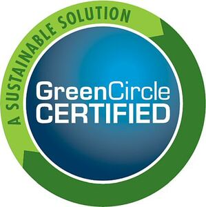

Trade Mark Journal No.2025/052 26 December 2025
WO0000001815050 (1,6,9,16,19,20,25,27,31,40,42)
Office of origin: United States of America
Certification Mark

The mark consists of a blue circle outlined in white with the words GREEN CIRCLE CERTIFIED in white centered in the circle, GREEN CIRCLE having the G and C capitalized on top of CERTIFIED in all capital letters, surrounded by a circular border of two green arrows, one arrow in dark green stating at the one o'clock position and ending at the eight o'clock position and another arrow in light green starting at the eight o'clock position, ending at the one o'clock position and containing the words A SUSTAINABLE SOLUTION in dark green capital letters.
Registration of this mark shall give no right to the exclusive use of "A SUSTAINABLE SOLUTION" and "CERTIFIED".
The mark contains the colours green, blue and white.
The mark consists of a blue circle outlined in white with the words GREEN CIRCLE CERTIFIED in white centered in the circle, GREEN CIRCLE having the G and C capitalized on top of CERTIFIED in all capital letters, surrounded by a circular border of two green arrows, one arrow in dark green stating at the one o'clock position and ending at the eight o'clock position and another arrow in light green starting at the eight o'clock position, ending at the one o'clock position and containing the words A SUSTAINABLE SOLUTION in dark green capital letters.
- Class 1
- Chemicals environmental and green products in the nature of chemicals, all that have one or more of the following, namely, a reduced carbon footprint, are closed loop products, have a reduced life cycle impact, contain rapidly renewable resources, contain recycled content, contain biobased content, were manufactured using renewable energy sources, and were manufactured using sustainable manufacturing practices.
- Class 6
- Aluminum environmental and green products in the nature of aluminum and steel alloys, all that have one or more of the following, namely, a reduced carbon footprint, are closed loop products, have a reduced life cycle impact, contain rapidly renewable resources, contain recycled content, contain biobased content, were manufactured using renewable energy sources, and were manufactured using sustainable manufacturing practices.
- Class 9
- Batteries and electrical environmental and green products in the nature of batteries, electrical products, electronic devices, all that have one or more of the following, namely, a reduced carbon footprint, are closed loop products, have a reduced life cycle impact, contain rapidly renewable resources, contain recycled content, contain biobased content, were manufactured using renewable energy sources, and were manufactured using sustainable manufacturing practices.
- Class 16
- Paper environmental and green products in the nature of paper goods and printed matter, all that have one or more of the following, namely, a reduced carbon footprint, are closed loop products, have a reduced life cycle impact, contain rapidly renewable resources, contain recycled content, contain biobased content, were manufactured using renewable energy sources, and were manufactured using sustainable manufacturing practices.
- Class 19
- Construction environmental and green products namely, building materials and construction goods, plastic pipes for plumbing purposes, all that have one or more of the following, namely, a reduced carbon footprint, are closed loop products, have a reduced life cycle impact, contain rapidly renewable resources, contain recycled content, contain biobased content, were manufactured using renewable energy sources, and were manufactured using sustainable manufacturing practices.
- Class 20
- Plastics environmental and green products namely, furniture and home accessories, house and garden products, all that have one or more of the following, namely, a reduced carbon footprint, are closed loop products, have a reduced life cycle impact, contain rapidly renewable resources, contain recycled content, contain biobased content, were manufactured using renewable energy sources, and were manufactured using sustainable manufacturing practices.
- Class 25
- Apparel environmental and green products namely, clothing and accessories, all that have one or more of the following, namely, a reduced carbon footprint, are closed loop products, have a reduced life cycle impact, contain rapidly renewable resources, contain recycled content, contain biobased content, were manufactured using renewable energy sources, and were manufactured using sustainable manufacturing practices.
- Class 27
- Flooring environmental and green products namely, floor coverings, all that have one or more of the following, namely, a reduced carbon footprint, are closed loop products, have a reduced life cycle impact, contain rapidly renewable resources, contain recycled content, contain biobased content, were manufactured using renewable energy sources, and were manufactured using sustainable manufacturing practices.
- Class 31
- Animal based food, environmental and green products namely animal based food products, all that have been produced with one or more of the following, namely, a reduced carbon footprint, are closed loop products, have a reduced life cycle impact, contain rapidly renewable resources, contain recycled content, contain biobased content, were manufactured using renewable energy sources, and were manufactured and produced using sustainable manufacturing practices.
- Class 40
- Product manufacturing environmental and green programs and services, namely, product manufacturing, all that have one or more of the following, namely, a reduced carbon footprint, a reduced life cycle impact, waste diversion from landfill, zero waste to landfill, certified energy savings, material ingredient reporting, utilizes renewable energy sources and utilizes sustainable manufacturing practices.
- Class 42
- Engineering design services environmental and green programs and services, namely, engineering design services, all that have one or more of the following, namely, a reduced carbon footprint, a reduced life cycle impact, waste diversion from landfill, zero waste to landfill, certified energy savings, material ingredient reporting, utilizes renewable energy sources and utilizes sustainable manufacturing practices.
GreenCircle Certified, LLC
Representative: Albright IP Limited, County House, Bayshill Road, Cheltenham Gloucestershire GL50 3BA UNITED KINGDOM
The Regulations provisionally accepted by the Registrar for governing the use of this Certification trade mark are open to inspection at the Trade Marks Registry, from where copies may be obtained. If no opposition arises the Registrar will approve the Regulations and the mark will proceed to registration.